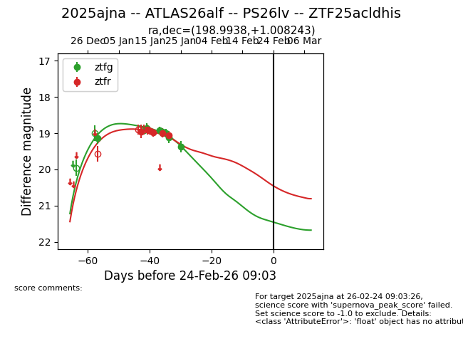
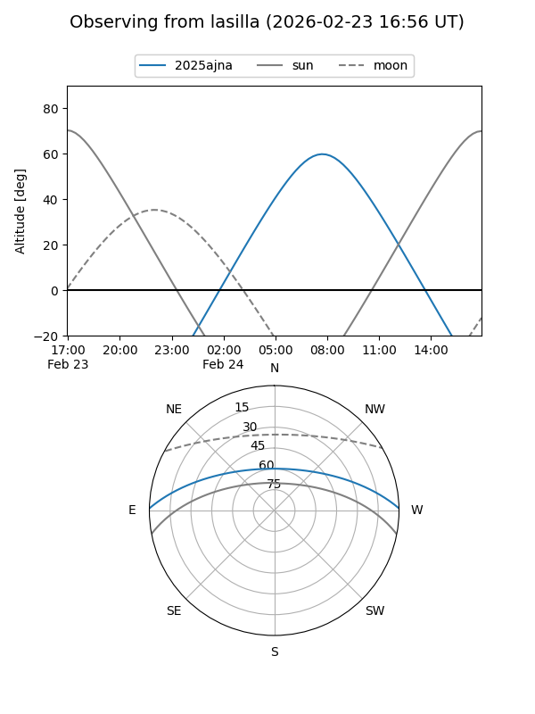
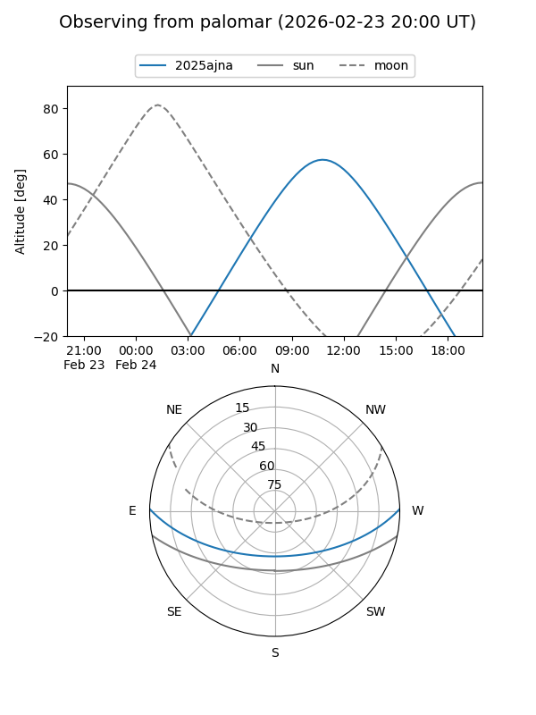

2025ajna
Target 2025ajna at 2025-12-31 17:00
Aliases and brokers:
FINK:
Lasair:
ALeRCE:
TNS:
YSE:
alt names
ZTF25acldhis (ztf,fink_ztf)
2025ajna (tns,yse)
Coordinates:
equatorial (ra, dec) = 198.9938,+1.00824
equatorial (HMS+DMS) = 13:15:58.51,+01:00:29.67
galactic (l, b) = (316.6514,+63.22452)
Flags:
Photometry:
last ztfg=19.14
1 ztfg detections
Lightcurve

Visibility


Additional plots